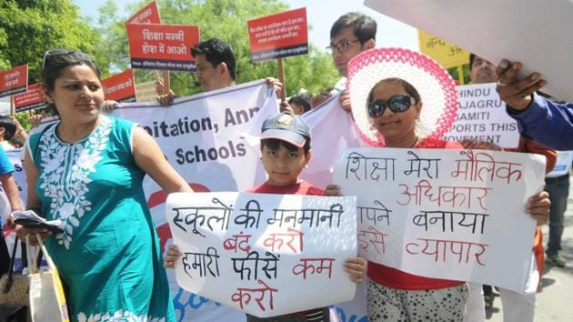
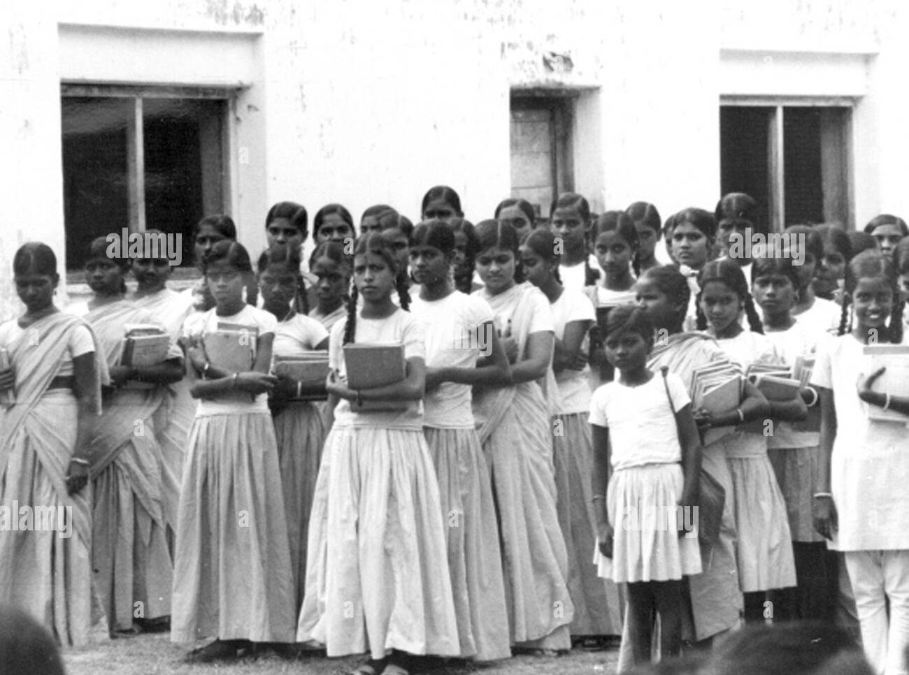
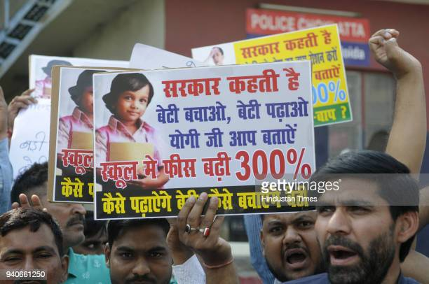

Introduction
Private schools in India have become a lucrative business in recent times, with many of them charging exorbitant fees that only a select few can afford. This has led to a situation where the education sector in India has become a symbol of inequality and disparity, where access to quality education is limited only to the privileged few. In this digital report, we will discuss how private schools in India are filling their mouths with money and establishing their kingdom with the innocent money of guardians.

Facts and Figures
According to a report by the Centre for Budget and Governance Accountability (CBGA), private schools in India are charging fees that are much higher than the cost of providing quality education. The report highlights that the average annual fee charged by private schools in India is Rs. 1.5 lakh, which is more than 50% of the per capita income of an average Indian. Furthermore, the report shows that private schools in India are spending only 20% of their income on teachers' salaries and other educational expenses, while the remaining 80% goes towards profits and other non-educational expenses.
This shows that private schools in India are operating as businesses rather than educational institutions, with a focus on maximizing profits rather than providing quality education.
History of Private Schools in India
The history of private schools in India can be traced back to the pre-colonial era when education was primarily imparted by religious institutions. During the colonial era, private schools were established by missionaries and other philanthropists, with the aim of providing education to the poor and marginalized sections of society. However, after independence, private schools in India became more commercialized, with many of them charging high fees and operating as profit-making institutions.
Criticism of Private Schools
Private schools in India have come under severe criticism for their exorbitant fees and their lack of accountability towards the quality of education they provide. Many of these schools have been accused of operating as businesses rather than educational institutions, with a focus on maximizing profits rather than providing quality education. Furthermore, private schools in India have been criticized for their lack of inclusivity and their limited access to children from disadvantaged backgrounds.
This criticism has led to calls for greater regulation of private schools in India to ensure that they provide quality education at affordable prices and to promote greater inclusivity.
Conclusion
In conclusion, private schools in India are filling their mouths with money and establishing their kingdom with the innocent money of guardians. These schools have become a symbol of inequality and disparity, where access to quality education is limited only to the privileged few. It is high time that the government takes action to regulate the functioning of private schools in India and ensures that they provide quality education at affordable prices. The education sector in India needs to be reformed to ensure that every child in the country has access to quality education, regardless of their socio-economic background.
By taking these steps, India can ensure that its education system is more equitable and that every child has the opportunity to reach their full potential.